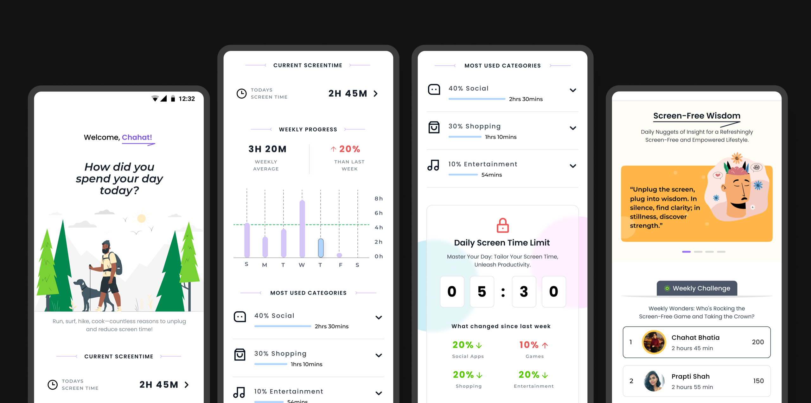
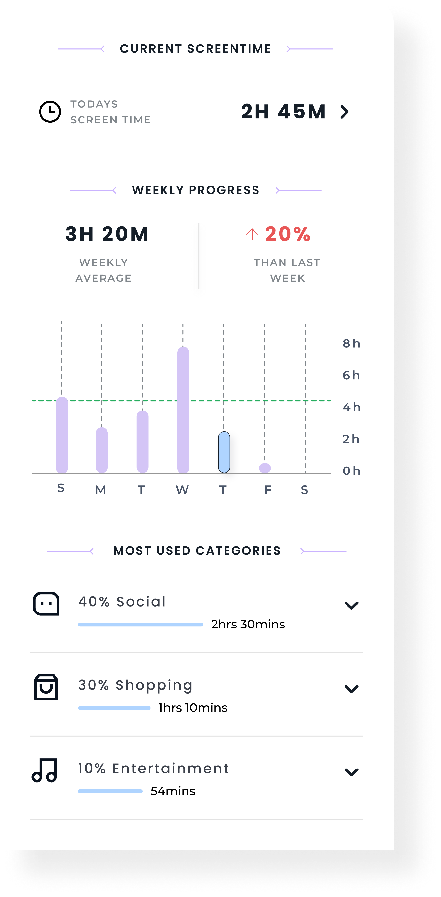
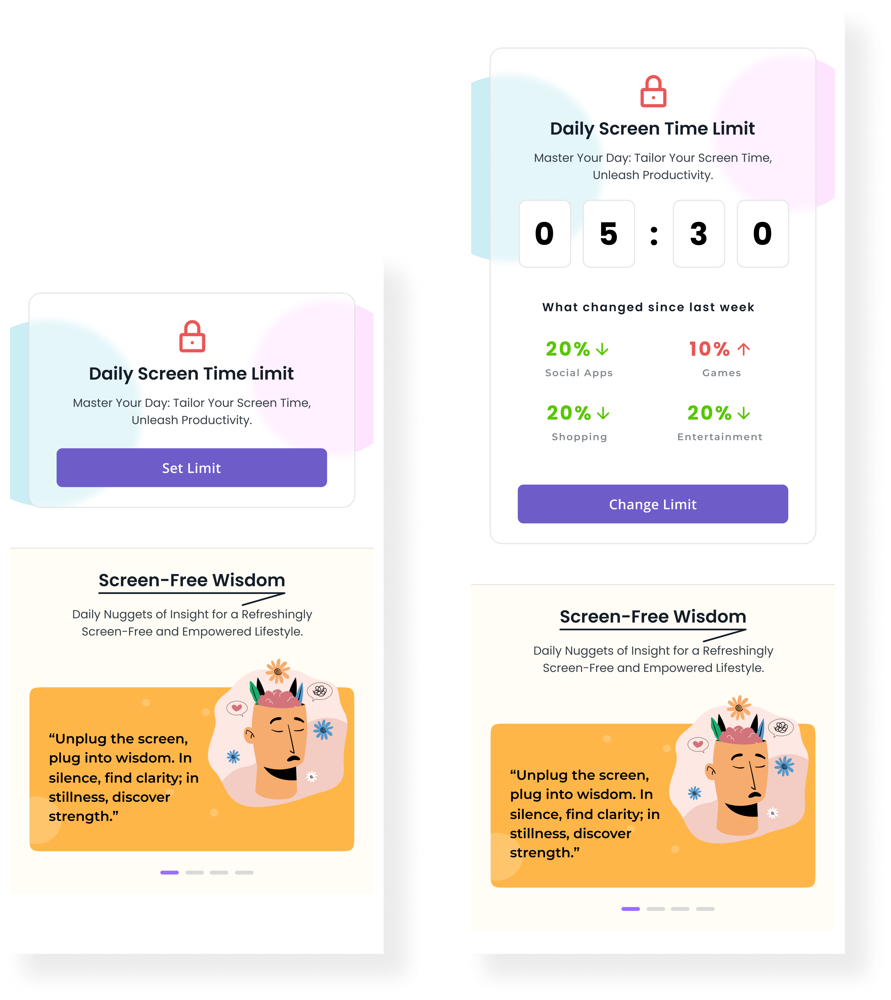
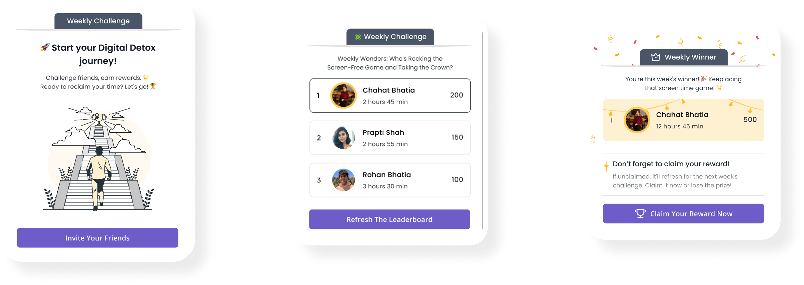
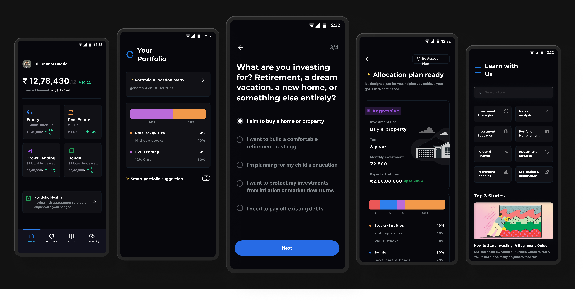
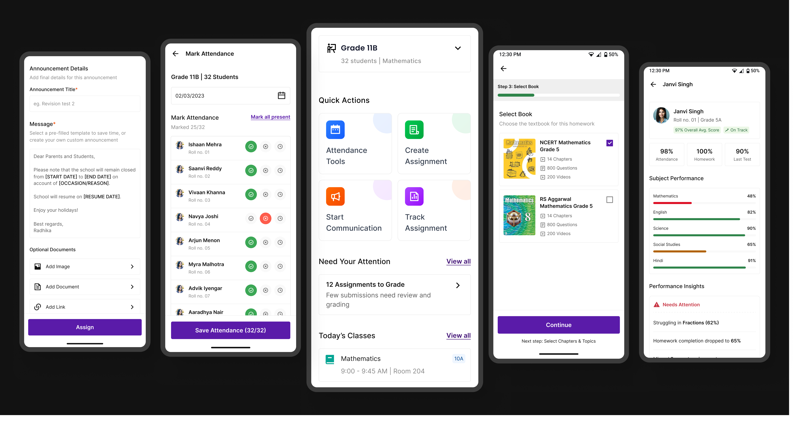
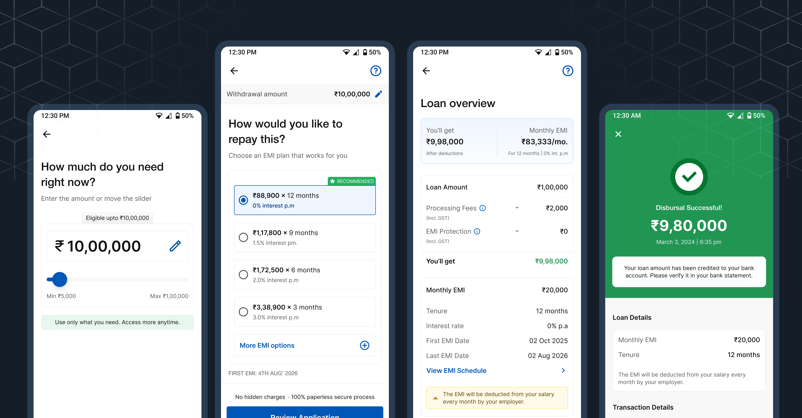

Feels emotionally light
soft visuals and clean layout to reduce digital fatigue
Personal project / Motion study
Helping users move from mindless scrolling to intentional usage through behavior-driven design, screen time awareness, and habit-building tools.

Managing screen time today is less about lack of awareness and more about lack of control. Most digital products are designed to maximize engagement, often leaving users stuck in cycles of mindless scrolling, distraction, and overuse.
This project explores how a product can help users regain that control by introducing intentional friction, setting clear boundaries, and building awareness through simple, supportive interactions. The goal is to make healthier digital habits feel achievable - not restrictive.
Problem statement
Managing screen time isn’t just about willpower - it’s about design. Most digital products are intentionally built to capture attention, making it difficult for users to step away even when they want to.
While awareness of overuse is growing, the tools available often fall short. They rely on passive tracking or rigid limits, without addressing the underlying behaviors that drive excessive usage.
As a result, users feel stuck between intention and action - aware of the problem, but unsupported in changing it.
Solution
Instead of only tracking screen time, the experience focuses on helping users understand their habits and take meaningful steps to improve them. It builds awareness through simple insights and encourages users to reflect on how they spend their time.
Over time, guided goals, timely nudges, and clear feedback support users in making better choices. The aim is to create a more mindful, controlled experience that feels supportive rather than restrictive.
From tracking time to shaping behavior: every interaction builds awareness and intent.
Design direction
soft visuals and clean layout to reduce digital fatigue
gentle nudges, daily rewards, and subtle gamification
avoids guilt-driven UX, and instead supports progress over perfection
hierarchy, spacing, and colors tuned for mindful navigation
Design
This section provides a quick snapshot of the user's screen time and usage patterns in a structured, easy-to-scan layout. Key metrics like today's usage, weekly average, and progress trends help users understand how their behavior is changing over time.
The weekly graph highlights daily usage, making patterns and spikes more visible at a glance. Usage categories further break down time spent across different activities, allowing users to quickly identify where most of their attention goes without feeling overwhelmed.
The layout focuses on clarity and simplicity, presenting essential information in a way that encourages reflection while keeping the experience lightweight and easy to navigate.

This section adapts based on the user's stage in the journey, introducing screen time limits in a simple and progressive way.
FIRST TIME USERS:
The interface focuses on a clear entry point to set a daily limit, keeping the interaction minimal and easy to get started. The goal is to reduce friction and help users take the first step without overwhelming them.
RETURNING USERS:
The experience becomes more contextual. It surfaces their current limit along with changes in usage patterns, offering quick insights into how their behavior has evolved. This allows users to adjust their limits more thoughtfully, making the feature feel more personalized and relevant over time.

This feature introduces a more engaging layer to the experience by turning digital wellness into a shared activity. The journey is designed across three clear stages:
Getting Started
Users are introduced to the challenge with a simple entry point that encourages them to invite friends and participate. The focus here is on reducing friction and making it easy to take the first step.
Tracking Progress
Once enrolled, users can view their performance through a leaderboard that compares screen time with others. This adds a sense of accountability and friendly competition, helping users stay engaged throughout the week.
Reward & Completion
At the end of the challenge, top performers are recognized and rewarded. This stage reinforces positive behavior and provides a sense of achievement, encouraging users to stay consistent and participate again.

View Other Projects

Personal Project
A structured investing system designed to reduce confusion for first-time users through clearer steps and guidance.
Open case study
Edtech / Classroom app
A unified platform that simplifies assignments, attendance, and communication for teachers, students, and parents.
Open case study
Fintech / Lending
A product case study focused on trust, hierarchy, and clearer decisions inside a complex onboarding flow.
Open case study